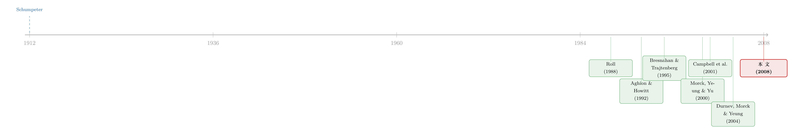

股价里那团「噪声」，原来是熊彼特的指纹——IT 如何把「创造性破坏」写进了个股的离散度
本文读的是 Chun, Kim, Morck & Yeung (2008, Journal of Financial Economics)：在 1971–2000 年的美国传统行业里，那些「个股表现彼此越不像」（firm-specific 表现异质性越高）的行业，恰恰也是 信息技术 (information technology, IT) 用得最狠、全要素生产率涨得最快的行业。作者把这条相关性解读成 熊彼特 (Schumpeter) 「创造性破坏」的一次实证显形：IT 作为一种通用目的技术，让一批新晋者不可预测地掀翻在位者，从而机械地拉大了公司之间的表现离散度。
1 一个被嫌弃了二十年的统计量
先从一个让金融经济学家头疼了很久的小数字说起：\(R^2\)。
资产定价模型——无论是 CAPM 还是 Fama-French——拟合个股收益时，\(R^2\) 低得可怜。市场和行业因子合起来，往往只能解释一只美国股票月度收益里很小的一部分，剩下一大团「谁也说不清」的东西，就是所谓的 firm-specific 变异。Roll（1988）当年盘点完这堆残差，几乎是带着一点无奈地承认：我们对个股涨跌的理解，远不如自己以为的那么多。从那以后，高 firm-specific 变异、低 \(R^2\)，长期被当成「模型不够好」或者「市场太吵」的尴尬证据。
而且更要命的是，这团噪声还在长。Campbell, Lettau, Malkiel & Xu（2001）发现，从上世纪后半叶起，美国个股的特质波动率系统性地往上爬；Morck, Yeung & Yu（2000）则在跨国比较里看到，越是制度成熟、人均 GDP 越高的国家，个股越「各走各的」，股价同步性越低。
于是问题就摆在那儿了：股价越来越不同步，到底是坏事，还是好事？是市场越来越糊涂，还是越来越聪明？
这篇论文给了一个出人意料、却又异常自洽的答案——它既不是噪声变多，也不是模型失灵，而是熊彼特的「创造性破坏」正在加速。
2 把「创造性破坏」翻译成一个可测的量
熊彼特（1912）那个著名的意象是这样的：经济进步不是温吞水式的累积，而是一波又一波的颠覆。新企业带着更好的技术冒出来，把在位的老大哥掀翻在地；过些年，它自己又被下一个新晋者掀翻。资本主义的活力，正来自这种「不断把旧的炸掉、给新的腾地方」的暴烈过程。
听上去很美，但它一直是个文学概念，难以落到数据上。最直观的度量是企业退出率——倒了多少家公司。可作者敏锐地指出：现实中的「破坏」往往没那么干脆，落后者多半只是被打趴下一阵子，而不是当场出局。退出率太粗，抓不住那种「你追我赶、胜负不断翻牌」的细腻动态。
那有没有更精细的尺子？
有。如果创造性破坏正在某个行业里翻江倒海，那么这个行业里的公司，表现必然彼此拉开。 赢家在意想不到的地方冒头、业绩异常地好；输家被打压、业绩异常地差;而且谁赢谁输事先无法预测，是逐渐揭晓的。这种「先后被揭晓的赢家与输家」，在数据上留下的痕迹，恰恰就是——individual 公司的表现偏离行业和经济整体的程度变大了。
换句话说,那团被 Roll 嫌弃了二十年的 firm-specific 噪声，可能压根不是噪声，而是创造性破坏强度的一枚指纹。
这就是全文反复打磨的那「一个核心」：firm-specific 表现异质性，是比退出率更细腻的创造性破坏强度计。 接下来所有的变量构造、所有的回归，都是在为这枚指纹找证据。
3 识别策略：把变异拆成「系统」与「特质」两半
要把这枚指纹量出来，第一步是把每个行业、每一年的公司表现，拆成「大家一起动的部分」和「自己单独动的部分」。
作者沿用 Roll（1988）和 Durnev, Morck & Yeung（2004）的做法，对行业 \(i\) 中的每家公司 \(j\)，逐年跑一个简单的回归：
$$r_{j,i,t} = a_{j,t} + b^{m}_{j,i,t}\, r_{m,t} + b^{i}_{j,i,t}\, r_{i,t} + \varepsilon_{j,i,t}$$
这里 \(t\) 索引一年内的 12 个月度收益，\(r_{m,t}\) 和 \(r_{i,t}\) 分别是（剔除了 \(j\) 自身的）价值加权市场收益与行业收益——剔除自身是为了避免在公司数少的行业里产生人造的相关。把回归残差平方和 \(SSE_{j,i,t}\) 与模型解释部分 \(SSM_{j,i,t}\) 在行业内加总，就得到两个量：firm-specific 变异
$$\sigma^2_{\varepsilon,i,t} \equiv \frac{\sum_{j\in i} SSE_{j,i,t}}{\sum_{j\in i} n_{j,t}}$$
和系统性变异
$$\sigma^2_{m,i,t} \equiv \frac{\sum_{j\in i} SSM_{j,i,t}}{\sum_{j\in i} n_{j,t}}$$
二者之比，就是这个行业那一年的「同步性」\(R^2\)：
$$R^2_{i,t} \equiv \frac{\sigma^2_{m,i,t}}{\sigma^2_{m,i,t}+\sigma^2_{\varepsilon,i,t}}$$
最妙的一步在于因变量的处理。\(R^2\) 被卡在 $[0,1]$ 区间、而且高度偏斜,直接拿来跑回归并不干净。作者用一个负 logistic 变换，把它拉成一个近似正态、且可以无界取值的「相对 firm-specific 变异」\(\Psi_{i,t}\)：
$$\Psi_{i,t} \equiv \ln\!\left(\frac{1-R^2_{i,t}}{R^2_{i,t}}\right) = \ln(\sigma^2_{\varepsilon,i,t}) - \ln(\sigma^2_{m,i,t})$$
这个等式右边写得很漂亮——相对异质性，就是「特质变异的对数」减去「系统变异的对数」。它一边度量个股有多「特立独行」，一边自动扣掉了大盘共振的成分。
值得强调的是，作者不只看股票收益。他们对真实销售增长率也做了完全平行的一套分解（只不过用季度数据、三年滚动窗口）。这一点至关重要：Wei & Zhang（2006）提醒过，任何关于「股价异质性上升」的解释，都必须同时允许基本面异质性的上升——否则就只是讲了一个关于交易噪声的故事。而创造性破坏的解释天然满足这个要求：赢家和输家的分化，首先是销售、利润这些基本面的分化，然后才反映到股价上。
（关于把异质波动率本身当作一个可预测、可定价对象的尝试，可参见《「波动率之谜」其实是一道预测题》。）
4 解释变量：把 IT 当成一台「破坏机」
有了指纹，还需要一个能制造破坏的嫌疑人。作者锁定的是 IT。
为什么是 IT？因为 Bresnahan & Trajtenberg（1995）、Helpman & Trajtenberg（1998）、Jovanovic & Rousseau（2005）等人论证过，IT 是一种 通用目的技术 (general purpose technology, GPT)——它像 20 世纪初的电力、工业革命早期的蒸汽机一样，不是只造福某一个行业，而是渗透进几乎所有行业，诱发遍地开花的工艺与产品创新。一旦某个传统行业里有人率先把 IT 用对了，他就可能不声不响地把同行甩在身后。这正是创造性破坏需要的「火星」。
IT 强度怎么量？作者用 BEA 的 Fixed Reproducible Tangible Wealth（FRTW）数据,追踪 61 类资产从 1971 到 2000 年、按两位数行业的投资，再用永续盘存法把投资流折成资本存量（IT 的折旧率取 \(\delta=0.31\)，与 BEA 数据一致）。一个行业的 IT 强度，定义为它的 IT 资本存量占其它资本存量的比重：
$$IT_{i,t} \equiv \frac{\sum_{k\in IT} K_{i,k,t}}{\sum_{k\notin IT} K_{i,k,t}}$$
这里有两处刻意的「洁癖」，恰恰是识别的关键。
第一，只看传统行业，把 IT 行业本身踢出去。 作者剔除了工业机械（SIC 35，含计算机制造）、商业服务（SIC 73，含软件），以及金融、农业、采矿等数据不可比或缺失的行业。为什么？因为他们要论证的是「IT 作为 GPT 渗透进传统行业、引发破坏」，而不是「dot-com 公司自己股价乱跳」。把 IT 生产者排除掉，故事才干净。
第二，用 IT 资本存量、而不是 IT 投资率。 这是对所谓「IT 生产率悖论」的一记回应。Loveman（1994）、Stiroh（1998）在早期数据里找不到 IT 对生产率的作用，可 Helpman & Trajtenberg（1998）解释道：生产率的红利只在 IT 用得足够深之后才显现。所以衡量「破坏」该看的是存量、是积累到位的渗透程度，而非当年砸了多少钱。
最后剔下来，是一个 1,290 个「行业—年」的 IT 投资面板，横跨 30 年、43 个行业（其中 19 个属制造业）。与表现异质性数据求交集后，股票收益异质性回归有 1,180 个行业—年观测，销售增长异质性回归有 1,010 个。
5 主回归：一台带固定效应的「除杂机」
核心回归非常直接——把行业的表现异质性，对滞后一期的 IT 强度回归，再塞进一堆控制变量和双向固定效应。最关键的那个方程是这样：
几个设计细节，看似琐碎，却决定了这条相关性是否可信：
- 用滞后 IT。 是先有 IT 渗透，后有破坏与分化——时间上的先后，至少挡掉了最粗暴的反向因果。销售增长那套回归因为用三年窗口，IT 强度就取前三年的均值。
- 加权最小二乘 (weighted least squares, WLS)，权重是总资产。 让大行业说话更响，避免一堆零碎小行业主导结果。
- 双向固定效应。 时间固定效应把「全市场一起涨跌」洗掉，行业固定效应把「这个行业天生就比较散」洗掉——于是 \(b_1\) 捕捉的是同一个行业内部、随时间推移、IT 用得越深时异质性是否越高。
- t 值允许异方差与序列相关（行业内聚类），这在这类长面板里是必须的。
作者还顺手给出了一个更一般的设定，把绝对系统变异也放回右边、不再硬约束其系数为 1：
$$\ln(\sigma^2_{\varepsilon,i,t}) = b_0 + b_1\ln(IT_{i,t-1}) + b_2\ln(\sigma^2_{m,i,t-1}) + C X_{i,t-1} + \sum_t\delta_t + \sum_i\lambda_i + u_{i,t}$$
结果是什么？ 一句话：\(b_1\) 稳健地为正、且统计显著。传统行业里 IT 用得越深，无论是股票收益还是真实销售增长的 firm-specific 异质性都更高;而且——这是作者特别强调的——这条联系在塞进了企业规模、年龄、外部融资依赖、竞争与放松管制程度、会计透明度、产权保护等一大票控制变量之后依然存活。也就是说,IT 不是别的某个因素的影子,它本身就扮演着一个稳健的、统领性的角色。
描述性证据同样有力。图 2、图 3 显示，1971–2000 年间，两种表现指标的 firm-specific 变异在绝对量级和相对占比上都大幅上升：系统性变异占总变异的比重一路下滑。图 5 则直接把行业 IT 强度的对数，对两种 firm-specific 变异的对数画散点——清晰的正相关，统计上显著。而图 4 说明这股上升潮横扫了一大片行业，不是个别赛道的偶然。
注意这套逻辑的双保险：股价异质性升 + 基本面（销售）异质性升 + 全要素生产率涨——三件事被同一个机制（IT 引发的创造性破坏）串了起来。任何只能解释其中一件的对手假说，都先天残缺。
6 为什么这能「调和」一堆打架的文献
这篇论文真正聪明的地方，是它把好几派看似互相矛盾的解释，一口气兜住了。
Xu & Malkiel（2003）说，个股波动上升是因为机构投资者越来越重要、噪声交易增多。可纯噪声交易讲不通销售增长的异质性为什么也同步上升——基本面不会被噪声推着走。创造性破坏能。
Morck, Yeung & Yu（2000）说，是 firm-specific 信息的资本化效率提高了——市场越来越会给个股「定制化」定价。可单纯的信息效率提升，并不要求基本面异质性真的上升。创造性破坏要求，而且预测到了。
还有一派（Pastor & Veronesi、Fink et al.、Bennett & Sias 等）把异质性归给小公司、新上市公司、竞争加剧或放松管制。 这些在作者的回归里都进了控制变量——结果 IT 的作用照样在。
于是作者给出一个漂亮的收束：当一个新 GPT 到来，它创造出大量「可能增值的创新与资产重组机会」（Jovanovic & Rousseau, 2005）。一个功能上有效的股票市场会在事前给每家公司的成功概率定价、做出微观上有效的资本配置（这里作者引了 Tobin, 1982 的精神）；而在事后，随着创造性破坏展开，新晋者与灵活的老兵不可预测地取代旧领袖、自己又被下一波取代——这个过程机械地制造出高 firm-specific 异质性。各派说的都对，只是都只摸到了大象的一部分。
这也意味着，那个被 Roll 哀叹了二十年的低 \(R^2\)，或许根本不该哀叹。如果它反映的是制度更好的国家里更快的创造性破坏，那么资产定价模型不仅没失效，反而可能在增长理论家那里收获一批新粉丝——把 \(R^2\) 当成一国创造性破坏强度的温度计来读。这与 King & Levine（1993）那句「Schumpeter might be right」、以及金融发展促进增长的整条文献，遥相呼应。
（关于「更先进的 IT 未必带来更激烈竞争」这一并不总是同向的微妙关系，可对照参见《两种技术，两种命运》；而对「技术革命常被高估」的一记冷水，则可参见《机器人去哪儿了？》。）
7 文献脉络
把这条线索摊开看，它其实是两股大河的交汇。
一股来自增长理论：熊彼特（1912）提出创造性破坏的意象，Aghion & Howitt（1992）把它写成第一个严格的内生增长模型，Bresnahan & Trajtenberg（1995）和 Helpman & Trajtenberg（1998）则给出 GPT 的框架，论证一种通用技术如何驱动全经济的增长。King & Levine（1993）把金融发展接进这条线——金融体系正是创造性破坏的「供血系统」。
另一股来自资产定价的实证：Roll（1988）发现个股 \(R^2\) 低、特质变异大；Campbell, Lettau, Malkiel & Xu（2001）记录了特质波动的长期上升；Morck, Yeung & Yu（2000）把它做成跨国比较，揭示同步性与制度质量的负相关；Durnev, Morck & Yeung（2004）则提出，firm-specific 变异高的行业，资本预算做得更增值。

本文（2008）站在这两股河的交汇处：它借资产定价那套 firm-specific 变异的度量，去实证增长理论里那个一直只是比喻的创造性破坏，并用 IT 这台 GPT「破坏机」把两者焊在一起。它不发明新模型，而是给一个旧概念找到了一枚可测的指纹——这正是它的位置与分量。
8 评论与延伸（Q&A + 研究方向）
(a) 几个可能的疑问
Q：firm-specific 异质性高，凭什么就一定是「创造性破坏」，而不是别的？
严格说，作者证的是一条相关，而非因果。但他们做了三件事来收窄解释空间：一是同时检验股价和销售增长两套异质性，排除掉纯噪声交易的故事；二是把规模、年龄、竞争、透明度、产权等竞争性解释全放进控制变量，IT 的作用依然存活；三是把 IT 强度滞后，挡掉最直接的反向因果。剩下的解释里，能同时讲通「股价散 + 基本面散 + TFP 涨」的，创造性破坏是最自洽的那个。但这仍是推断，不是实验。
Q：用 IT 资本存量而非投资率，是不是有点「事后挑变量」？
这其实是有理论依据的，不是数据挖掘。Helpman & Trajtenberg（1998）的「IT 生产率悖论」解释明确预测：红利只在 IT 渗透足够深之后才显现，所以该看的是积累到位的存量。用投资率反而会被早期「砸钱却没产出」的阶段污染。作者这一选择是先验的，符合 GPT 理论。
Q：把 IT 行业本身（SIC 35、73）剔掉，会不会反而把最大的破坏者藏起来了？
恰恰相反，这是为了让识别更干净。作者的论点是「IT 作为 GPT 渗透进传统行业引发破坏」，而不是「IT 公司自己股价波动大」。如果不剔，dot-com 的剧烈波动会污染估计，让人分不清到底是渗透效应还是 IT 板块自身的噪声。剔掉之后留下的若仍显著，反而更有说服力。
Q：低 \(R^2\) 到底是好消息还是坏消息？
本文给的答案是：在制度成熟的经济里，低 \(R^2\)（高 firm-specific 变异）很可能是好消息——它是创造性破坏活跃、资本配置有效的副产品。这与 Morck-Yeung-Yu（2000）一脉相承：发达国家个股越不同步。但要小心，这个结论是有条件的，前提是金融市场功能有效、能把信息正确资本化；在信息环境差的市场，高特质波动也可能就是纯噪声。
Q：这跟 Campbell et al.（2001）记录的「特质波动上升」是一回事吗？
不完全是。Campbell et al. 记录的是一个事实（特质波动在升），本文提供的是一个机制（为什么在升）。而且本文多走了一步——它要求基本面异质性也同步上升（响应 Wei & Zhang, 2006 的质疑），并把这股上升潮跟一个可观测的驱动力（IT 强度）挂上钩。它是对那个事实的解释，而非重复。
Q：宏观上为什么「破坏更剧烈」却「波动更小」？开篇 Greenspan 的引言不是自相矛盾吗？
这正是作者埋的钩子。个体层面的创造性破坏越激烈，公司之间的命运越分化（横截面离散度大）；但这些 idiosyncratic 的此消彼长在加总时互相抵消，反而让宏观产出更平滑。微观的狂暴与宏观的平静，是同一枚硬币的两面——这也是 firm-specific（而非总量）异质性之所以是对的度量的原因。
(b) 几个可能的研究问题与提案
1. 把这枚「创造性破坏指纹」搬到公司债与信用市场。 - 【经济故事】股票的 firm-specific 变异度量的是「上行+下行」的总分化，而创造性破坏对债权人的含义主要在下行——在位者被掀翻时，是它们的债先出问题。若创造性破坏加速，行业内信用利差的 firm-specific 离散度、违约率的横截面方差，应当同步走阔。这能给「IT→破坏」的故事提供一个只看下行风险的独立验证。 - 【可行性】中。数据可得（TRACE + Mergent FISD + Compustat 行业 IT 强度），把本文的方差分解平移到信用利差即可；难点在于债券层面数据更稀、需要足够多发债公司的行业才能估行业内离散度。识别上仍是相关性，但可借本文的滞后 IT + 双向固定效应框架。
2. 外资持有人会放大还是抑制创造性破坏的「指纹」？ - 【经济故事】外国投资者往往被认为更看重 firm-specific 信息、推动信息资本化（参见跨国 R² 文献）。一个自然的猜想是：外资持股比例高的行业，IT→异质性的弹性 \(b_1\) 更大——因为市场更愿意为赢家输家的分化定价。反过来，若外资是「同进同出」的羊群，可能反而压低特质变异。 - 【可行性】中。需要行业/公司层面外资持股数据（如 FactSet/Thomson 的国际持股，或各国可投资度指数），与本文 IT 面板交互。识别可用可投资度的外生放开作为准实验（这一思路与《外资真是「蝗虫」吗？》中对外资长期影响的讨论相通）。
3. AI 是不是「下一台 GPT」？复刻本文于 2010–2025。 - 【经济故事】本文讲的是 20 世纪末 IT 这台 GPT 的故事。如果人工智能是新一代 GPT，那么 2010 年后 AI 投入更密集的传统行业，应当再次出现 firm-specific 表现异质性与 TFP 的同步上升。这是对本文机制的一次样本外检验，也能回答「AI 是真破坏还是又一次被高估」。 - 【可行性】中到高。AI 渗透度可用招聘数据（AI 岗位占比）、专利、或企业披露文本构造；表现异质性度量与本文完全一致。难点是 AI 资本存量没有 BEA FRTW 那样现成的口径，需自建代理变量。
4. 把退出率与 firm-specific 异质性放在一起赛跑。 - 【经济故事】本文断言异质性是比退出率更「细腻」的破坏强度计，但并未直接比较两者。一个干净的检验是：同时用企业退出/进入率和 firm-specific 变异去解释行业 TFP 增长，看谁的信息含量更高、是否互补。若异质性在控制退出率后仍显著，本文的核心主张就有了更硬的支撑。 - 【可行性】高。Census BDS、Compustat 进出样本都能构造退出率，与本文变量同口径，是一个低成本、高价值的稳健性延伸。
5. 流动性视角：破坏越剧烈，赢家输家的流动性是否也分化？ - 【经济故事】创造性破坏中，被掀翻的在位者可能遭遇资金外流、流动性枯竭，而新晋赢家流动性改善。于是行业内流动性的 firm-specific 离散度，也应随 IT 强度上升。这把创造性破坏的指纹从「收益/基本面」延伸到「微观结构」。 - 【可行性】中。股票流动性指标（Amihud、价差）易得，可平移本文方差分解；债券侧则更难，但正是公司债流动性研究里有意思的缺口。
9 我的判断
贡献。 这篇论文最漂亮的地方，不在于它跑了多复杂的回归，而在于一次概念上的翻译：它把熊彼特那个一直停留在文学层面的「创造性破坏」，焊接到了一个金融经济学家天天在用、却长期当作烦恼的统计量——firm-specific 变异——之上。一旦接上，许多原本互相打架的实证发现（噪声交易、信息资本化、小公司、竞争加剧）就被一个机制统一收编了。「同时验证股价与基本面两套异质性」这一手，尤其老练，直接堵死了纯噪声的退路。
对识别的担忧。 必须诚实：这是一条相关性，不是因果。滞后 IT、双向固定效应、海量控制变量都让它更可信，但都挡不住一个潜在的共同驱动者——比如某种未观测的「行业动荡冲击」同时拉高了 IT 投入、异质性和 TFP。作者没有一个真正外生的 IT 冲击（如政策、技术标准的准实验）来钉死因果。此外，IT 资本存量的度量依赖 BEA 折旧率等一系列假设，存在测量误差；而把 IT 行业整体剔除，虽让故事干净，却也意味着结论严格说只适用于「传统行业」，外推到整个经济需谨慎。
后续想看到什么。 三件事。其一，一个外生的 IT 渗透冲击（比如宽带铺设、某项标准的强制采用）做工具变量或 DiD，把这条相关性推向因果。其二，样本外重做——尤其是用 AI 当作新一代 GPT，检验机制是否复现。其三，把指纹搬到信用市场：如果创造性破坏是真的，那么在位者被掀翻时，它们的债应该比股票更早、更痛地说话。这恰是当下公司债流动性与信用风险研究里，一个值得一挖的接口。
参考文献
Aghion, P., Howitt, P. (1992). A model of growth through creative destruction. Econometrica 60(2), 323–351.
Aghion, P., Howitt, P. (1998). Endogenous Growth Theory. MIT Press, Cambridge, MA.
Bresnahan, T.F., Trajtenberg, M. (1995). General purpose technologies: engines of growth? Journal of Econometrics 65(1), 83–108.
Brynjolfsson, E., Hitt, L. (2003). Computing productivity: firm-level evidence. Review of Economics and Statistics 85(4), 793–808.
Campbell, J.Y., Lettau, M., Malkiel, B.G., Xu, Y. (2001). Have individual stocks become more volatile? An empirical exploration of idiosyncratic risk. Journal of Finance 56(1), 1–43.
Durnev, A., Morck, R., Yeung, B. (2004). Value-enhancing capital budgeting and firm-specific stock return variation. Journal of Finance 59(1), 65–105.
Helpman, E., Trajtenberg, M. (1998). A time to sow and a time to reap: growth based on general purpose technologies. In: Helpman, E. (Ed.), General Purpose Technologies and Economic Growth. MIT Press, Cambridge, MA.
Jovanovic, B., Rousseau, P.L. (2005). General purpose technologies. In: Aghion, P., Durlauf, S.N. (Eds.), Handbook of Economic Growth. Elsevier, Amsterdam.
King, R.G., Levine, R. (1993). Finance and growth: Schumpeter might be right. Quarterly Journal of Economics 108(3), 717–737.
Morck, R., Yeung, B., Yu, W. (2000). The information content of stock markets: why do emerging markets have synchronous stock price movements? Journal of Financial Economics 58(1–2), 215–260.
Roll, R. (1988). R². Journal of Finance 43(3), 541–566.
Chun, H., Kim, J.-W., Morck, R., Yeung, B. (2008). Creative destruction and firm-specific performance heterogeneity. Journal of Financial Economics 89(1), 109–135.